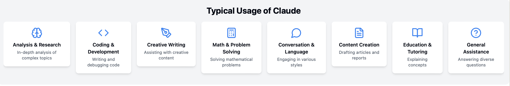

Principles of Data Science
“If you tell me precisely what it is a machine cannot do, then I can always make a machine which will do just that. John von Neumann, 1956”
When you open an Amazon page there are many personal suggestions of goods to purchase. By analyzing previous product pages visited and purchases made by you and other people who have bought similar products Amazon uses AI and machine learning to predict what would of interest to you next time you shop.
When you apply for a loan online, you typically get an immediate answer after filling an application. The information you provide, combined with your credit history pulled from a credit history bureau is used by a predictive model which can tell with high level of confidence whether you are to default on the loan or not.
You might ask, what is common among one of the most successful Internet retail company, finance industry and a phenomenal baseball team? All of these decisions use AI and methods of predictive analytics to improve the operations. They used historical observations combined with rigorous statistical analysis and efficient computer algorithms to predict future outcomes and change the decisions. The ability to collect and analyze complex data sets has been a prerogative of a small number of people for many year. It vital to have experience in data engineering, statistics, machine learning and probability. A data scientists has all of those skills. Current tools developed by industry and academic institutions makes data science profession accessible to a wider audience without requiring a training in a specific technical filed.
Over the past decade, there has been an explosion of work, mostly applied, on deep learning. Applications of deep learning are everywhere. The main reason for this is that large Internet companies such as Google, Facebook, Amazon and Netflix increasingly displace traditional statistical and machine learning methods with deep learning techniques. Though, such companies are at the frontier of applying deep learning, virtually any industry can be impacted by applying deep learning (DL).
Data Science is a relatively new field that refers to sets of mathematical and statistical models, algorithms, and software that allow extracting patterns from data sets. The algorithms are the adoptions of applied mathematics techniques to specific computer architectures and the software implements those algorithms.
Predictive analytics applies AI models to design predictive rules which then can be used by engineers and business for forecasting or what-if analysis. For example, a company that is interested in predicting sales as a result of advertisement campaign would use predictive model to identify the best way to allocate its marketing budget or a logistics company would use a predictive model to forecast demand for shipments to estimate the number of drivers it would need in the next few months.
Artificial Intelligence has been around for decades. In fact the term AI was coined by a famous computer scientist John McCarthy in 1955. While being tightly connected to the field of robotics for many years, the AI concepts are widely applicable in other fields, including predictive analytics. Currently, the AI is understood as a set of mathematical tools that are used to develop algorithms that can perform tasks, typically done by humans, for example, drive a car or schedule a doctor’s appointment. This set of mathematical tools include probabilistic models, machine learning algorithms and deep learning. The previous successful applications included the victory of IBM’s DeepBlue over then world champion Garry Kasparov in 1997.
Tree search algorithms were developed by DeepBlue engineers to implement the chess robot. A modification was the addition of heuristics to cut branches of the tree that would not lead to a win. Those heuristics were designed by chess grand masters based on their intuition and previous experience. Vehicles in grand challenge also relied on traditional techniques such as Kalman filters and PID (proportional-integral-derivative) controllers that have been in use for many years.
Two distinguishing features of AI algorithms:
Algorithms typically deal with probabilities rather than certainties.
There’s the question of how these algorithms “know" what instructions to follow.
A major difference between modern and historical AI algorithms is that most of the recent AI approaches rely on learning patterns from data. For example, DeepBlue algorithm was “hardcoded” and the human inputs were implemented as if-then statements by the IBM engineers. On the other hand, modern AlphaGo zero algorithm did not use any human inputs whatsoever and learned optimal strategies from a large data sets generated from self-plays. Although handcrafted systems were shown to perform well in some tasks, such as chess playing, the are hard to design for many complex applications, such as self-driving cars. On the other hand large data sets allow us to replace set of rules designed by engineers with a set of rules learned automatically from data. Thus, the learning algorithms, such as deep learning are at the core of the most of modern AI systems.
The main driving factor behind the growth of modern AI applications is the availability of massive and often unstructured data sets. Om the other hand, we now have appropriate computing power to develop computationally intensive AI algorithms. The three main modern AI enablers are:
Moore’s law: Decades-long exponential growth in the speed of computers (Intel, Nvidia)
New Moore’s law: Explosive growth in the amount of data, as all of humanity’s information is digitized
Cloud-computing (Nvidia, Google, AWS, Facebook, Azure)
Fitting complicated models to describe complicated patterns without overfitting requires millions or billions of data points. Two key ideas behind pattern-recognition systems are
in AI, a “pattern” is a prediction rule that maps an input to an expected output
“Learning a pattern” means fitting a good prediction rule to a data set
In AI, prediction rules are often referred to as “models”. The process of using data to find a gooo prediction rule is often called “training the model”. With millions (or billions) of datapoints and fast pattern-matching skills, machines can find needles in a haystack proving insights for human health, transportation, ... etc.
Machine learning (ML) arises from this question: could a computer go beyond “what we know how to order it to perform” and learn on its own how to perform a specified task? Could a computer surprise us? Rather than programmers crafting data-processing rules by hand, could a computer automatically learn these rules by looking at data? This question opens the door to a new programming paradigm. In classical programming, the paradigm of symbolic AI, humans input rules (a program) and data to be processed according to these rules, and out come answers. With machine learning, humans input data as well as the answers expected from the data, and out come the rules. These rules can then be applied to new data to produce original answers.
A machine-learning system is trained rather than explicitly programmed. It’s presented with many examples relevant to a task, and it finds statistical structure in these examples that eventually allows the system to come up with rules for automating the task. For instance, if you wished to automate the task of tagging your vacation pictures, you could present a machine-learning system with many examples of pictures already tagged by humans, and the system would learn statistical rules for associating specific pictures to specific tags.
Although machine learning only started to flourish in the 1990s, it has quickly become the most popular and most successful subfield of AI, a trend driven by the availability of faster hardware and larger datasets. Machine learning is tightly related to mathematical statistics, but it differs from statistics in several important ways. Unlike statistics, machine learning tends to deal with large, complex datasets (such as a dataset of millions of images, each consisting of tens of thousands of pixels) for which classical statistical analysis such as Bayesian analysis would be impractical. As a result, machine learning, and especially deep learning, exhibits comparatively little mathematical theory—maybe too little—and is engineering oriented. It’s a hands-on discipline in which ideas are proven empirically more often than theoretically.
Deep learning DL is a type of machine learning which performs a sequence of transformations (filters) on a data. Output of each of those filters is called a factor in traditional statistical language and hidden feature in machine learning. Word deep means that there is a large number of filters that process the data. The power of this approach comes from the hierarchical nature of the model.
The three main factors driving AI are:
Massive Data
Trial and Error. A Billion Times per Second (Chess, Go)
Deep Learning Pattern Recognition
The widespread of mobile phones leads to generation of vast amounts of data. Besides images, users generate space and time trajectories, which are currently used to estimate and predict traffic, text messages, website clicking patterns, etc.

Deep learning with many successful applications, has been frequently discussed in popular media. The popularity of the topic has led to hype people tend to think that deep learning techniques are capable to replace many of the human tasks, such as medical diagnostics, accountings. On the pessimistic side, people think that after a short hype, the DL techniques will disappoint and companies will stop funding R&D work on its development. However, the research on pushing this filed further is slow and it will take time before deep learning penetrates a wide range of industries. At any rate, the demand for data scientists in general and AI specialists has been increasing over the last few years with biggest markets being on silicon valley, NYC and Washington, DC(indeed 2018).

The field of predictive analytics was popularized by many famous competitions in which people compete to build the model with lowest prediction error. One of the first of this types of competitions was the Netflix prize. In 2009 Netflix payed $1 million to a team that developed the most accurate model for predicting movies a user would like to watch. At that time Netflix’s recommendation system generated 30 billion predictions per day. The initial goal of improving recommendation algorithm by 10 percent was overachieved by the winning team. The wining team used what is called an ensemble technique, which takes a weighted average from different prediction algorithms. Thus, the first lesson from this competition is that we typically need to build several predictive models to achieve a good results. On the other had, the model developed by the winning team was never used by Netflix due to complexity of those models and the fact that by the end of competition Netflix mostly shifted to streaming movies versus sending DVDs over mail. The second lesson is that simplicity and interpretability of models matters when they are deployed on a large scale. The third lesson, is that models need to adapt accordingly to meet the fast changing business requirements.
Deep Learning’s (DL) growing popularity is summarized by the grown of products that Google is developing using DL. Figure fig-dlingoogle shows this immense growth. One key differentiating effect is that DL algorithms are scalable and can be implemented across the interned in apps such as YouTube and Gmail.
Applications of Machine Learning/Deep Learning are endless, you just have to look at the right opportunity! There is a similar dynamics in popularity of deep learning search queries on Google. The growth is again exponential, although it is not yet close to popularity of traditional statistical techniques, such as linear regression analysis.
Meanwhile, some ethical concurs are being raised as a result of growing popularity of AI. The most discussed thus far is the impact on the job market and many jobs being replaced by deep learning models. Although, some economic analysis (Acemoglu and Restrepo 2018) shows that while jobs displacement leads to reduced demand for labor and wages, it counteracted by a productivity effect and increases in demand for labor in non-automated tasks.
The algorithmic aspects of deep learning has existed for decades. In 1956, Kolmogorov has shown that any function can be represented as a superposition of univariate functions (this is exactly what deep learning does). In 1951 Robbins and Monro proposed stochastic approximations algorithms. This is the main technique for finding weights of a deep learning model today.
Backpropagation algorithm for finding derivatives was first published and implemented by Werbos in 1974. In mid 1980s Schmidhuber studied many practical aspects of applying neural networks to real-life problems. Since the key ingredients of DL has been around for several decades, one could wonder why we observe a recent peak in popularity of those methods.
One of the strong driving forces is adoption of DL by internet companies that need to analyze large scale high dimensional datasets, such as human-written text, speech and images. Smartphone photography led to people uploading vast amounts of images to services like Instagram and Facebook. In 2012 more mobile devices were sold than PCs. The number of images shared on the Internet has skyrocketed as well. This can be see in products that Google is developing using DL.

The proliferation of smartphones globally has been one of the most dramatic technological adoptions in human history. From just 173 million smartphone users worldwide in 2010, the number exploded to over 6.8 billion users by 2023, representing nearly 86% of the global population. This exponential growth has been particularly pronounced in developing markets, where smartphones often serve as the primary gateway to the internet. Countries like India and China have seen smartphone penetration rates exceed 80%, while regions in Africa and Southeast Asia continue to show rapid adoption curves. The ubiquity of smartphones has fundamentally transformed how data is generated and consumed - these devices produce continuous streams of location data, user interactions, images, messages, and behavioral patterns that form the foundation for modern AI applications. The convergence of increasingly powerful mobile processors, high-resolution cameras, and always-on internet connectivity has created an unprecedented data generation ecosystem that feeds directly into the machine learning models powering everything from recommendation systems to autonomous vehicles.
Therefore, data generated by Internet users creates a demand for techniques to analyze large scale data sets. Mathematical methodologies were in place for many years. One missing ingredient in the explosive nature of DL popularity is the availability of computing power. DL models are computationally hungry, trial and error process is required to build a useful model. Sometimes hundreds or thousands of different models are required to be evaluated before choosing one to be used in an application. Training models can be computationally expensive, we are usually talking about large amounts of training data that need to be analyzed to build a model.
The adoption rate of AI technologies, particularly generative AI like ChatGPT, has shattered all previous records for technology adoption. While it took the internet 7 years to reach 100 million users, the telephone 75 years, and television 13 years, ChatGPT achieved this milestone in just 2 months after its launch in November 2022. This unprecedented speed of adoption reflects not just the accessibility of AI tools, but also their immediate utility across diverse user needs. Unlike previous innovations that required significant infrastructure changes or learning curves, AI chatbots could be accessed through simple web interfaces and provided immediate value for tasks ranging from writing assistance to problem-solving. The viral nature of AI adoption has been further accelerated by social media demonstrations and word-of-mouth sharing of impressive AI capabilities, creating a network effect that compounds the growth rate. This rapid adoption suggests that AI represents a fundamentally different type of technological shift - one that augments human capabilities rather than replacing existing systems entirely. The chart below illustrates the explosive growth potential of AI technologies.

The first generation of AI models was fundamentally enabled by the availability of powerful GPU chips, which provided the parallel processing capabilities necessary to train deep neural networks on large datasets. The breakthrough in deep learning around 2012, including innovations like AlexNet for image recognition, would not have been possible without GPUs that could perform thousands of matrix operations simultaneously. Current AI models, including ChatGPT, Claude, and other large language models, continue to rely primarily on GPUs for both training and inference. Modern AI training clusters consist of thousands of interconnected GPUs working together for weeks or months to process the enormous datasets required for today’s sophisticated models. While some companies have developed specialized AI chips like Google’s TPUs, GPUs remain the dominant platform for AI development due to their versatility, widespread availability, and established software ecosystems.
The gaming industry was one of the earliest drivers of GPU development, as game developers demanded increasingly sophisticated graphics rendering capabilities to create immersive virtual worlds with realistic lighting, textures, and physics simulations. Companies like NVIDIA and AMD invested heavily in parallel processing architectures optimized for the matrix operations required to render complex 3D scenes in real-time. The rise of cryptocurrency mining, particularly Bitcoin and Ethereum, created an unexpected second wave of GPU demand as miners discovered that graphics cards were far more efficient than traditional CPUs for the repetitive hash calculations required by proof-of-work algorithms. This mining boom drove massive investments in GPU manufacturing capacity and spurred innovations in memory bandwidth and energy efficiency. More recently, the explosion of AI-generated video content has created a third major demand driver, as video generation models require enormous computational power to process and synthesize high-resolution video frames. The convergence of these three use cases - gaming graphics, cryptocurrency mining, and AI video generation - has accelerated GPU development far beyond what any single application could have achieved alone, creating the powerful hardware infrastructure that now enables training of large language models and other AI applications.
Table tbl-nvda-chips illustrates the dramatic evolution of GPU performance over two decades, from early graphics cards to specialized AI accelerators. The data shows exponential growth in computational power: from the modest 0.23 TeraFLOPS of the 2006 GeForce 7900 GTX to the projected 100 PetaFLOPS (FP4) of the 2027 Rubin Ultra - representing a performance increase of over 400,000x. Here FP4 is a lower precision (4-bit) floating-point arithmetic that is used for AI workloads. It is an alternative to FP32 (32-bit) floating-point arithmetic that is used for general purpose computing.
Memory capacity has similarly exploded from 0.5GB to a projected 1TB. Modern GPUs have evolved from simple graphics processors to sophisticated AI-optimized architectures featuring specialized tensor cores, mixed-precision arithmetic (FP8/FP4), and massive high-bandwidth memory systems. The transition from traditional FP32 floating-point operations to lower-precision AI workloads (FP8/FP4) has enabled unprecedented computational throughput measured in PetaFLOPS and ExaFLOPS scales, making current and future GPUs the primary engines driving the deep learning revolution and large language model training.
| Year | GPU Model/Architecture | FP32 Peak (TeraFLOPS) | FP8/FP4 Peak (Peta/ExaFLOPS) | Memory (per GPU) |
|---|---|---|---|---|
| 2006 | GeForce 7900 GTX | 0.23 | 0.5GB GDDR3 | |
| 2016 | GeForce GTX 1080 | 8.9 | 8GB GDDR5X | |
| 2024 | RTX 4070 SUPER | ~32 | 12GB GDDR6X | |
| 2024 | Blackwell B200 | ~45 (FP64) | 20 PFLOPS (FP4) / 1.4 ExaFLOPS (AI cluster) | 288GB HBM3e |
| 2026 | Rubin VR300 | 50 PFLOPS (FP4) / 1.2 ExaFLOPS (FP8, rack) | 288GB HBM4 | |
| 2027 | Rubin Ultra | 100 PFLOPS (FP4) / 5 ExaFLOPS (FP8, rack) | 1TB HBM4e (per 4 dies) |
Now AI models are the main consumers of those processors. The more popular of those are ChatGPT-4, Anthropic’s Claude and Perplexity. ChatGPT-4 is based on the transformer architecture. It is able to handle long conversations and maintain better context over multiple turns. It is stronger in creative writing, technical writing, reasoning tasks, and code generation. It has better performance on logic-heavy tasks and answering technical queries. It is mainly used for chatbots, automated content creation, code writing, customer support, and more advanced AI tasks.
OpenAI, the company behind ChatGPT, has experienced remarkable growth in both valuation and revenue. As of late 2024, OpenAI reached a valuation of $157 billion following its latest funding round, making it one of the most valuable private companies in the world. The company’s annual recurring revenue (ARR) has grown exponentially, reaching approximately $3.7 billion in 2024, driven primarily by ChatGPT subscriptions and API usage. OpenAI has raised over $13 billion in total funding, with major investors including Microsoft, which has invested $13 billion and maintains a strategic partnership that includes exclusive cloud computing arrangements. This rapid financial growth reflects the massive demand for generative AI capabilities across industries and the transformative potential of large language models.
Claudeis the main competitor of OpenAI. It is supported by Amazon and excels at complex reasoning tasks, problem-solving, and in-depth analysis across a wide range of domains. Claude can write, debug, and explain code in many programming languages. It can analyze images and documents in addition to text and can engage in various conversation styles, from formal analysis to creative writing to casual discussion.

Amazon has made a significant strategic investment in Anthropic, Claude’s creator, committing up to $4 billion to advance AI safety research and development. This partnership positions Amazon Web Services (AWS) as Anthropic’s primary cloud provider while giving Amazon a minority ownership stake in the company. Unlike ChatGPT, which excels in creative writing and general-purpose conversations, Claude is specifically designed with a focus on safety, harmlessness, and nuanced reasoning. Claude demonstrates superior performance in tasks requiring careful analysis, ethical reasoning, and handling sensitive topics. It employs Constitutional AI training methods that make it more reliable in avoiding harmful outputs and better at acknowledging uncertainty when it doesn’t know something. Recent advances in Claude 3.7 and Claude 4.0 have introduced groundbreaking multimodal capabilities, allowing these models to process and analyze images, documents, and code with unprecedented accuracy. Claude 4.0 represents a significant leap forward in mathematical reasoning, coding assistance, and complex problem-solving tasks, with performance improvements of 40-60% over previous versions in benchmark evaluations. These newer models feature enhanced “thinking” processes that are more transparent, often explaining their reasoning step-by-step with greater depth and clarity, which makes them particularly valuable for educational applications, research assistance, and professional analysis where understanding the AI’s decision-making process is crucial. Claude 4.0 also introduces improved long-context understanding, capable of processing documents up to 200,000 tokens, and demonstrates remarkable advances in scientific reasoning and technical writing. This approach has made Claude increasingly popular among researchers, academics, and professionals who require more thoughtful and contextually aware AI assistance.
Perplexity synthesizes information from multiple sources and presents it with proper citations. Each response includes references for easy verification. It functions as a conversational search engine. Perplexity has emerged as a formidable competitor to Google Search by offering a fundamentally different approach to information discovery. Unlike traditional search engines that provide links to websites, Perplexity acts as an AI-powered research assistant that directly answers questions while citing sources. The company has attracted significant investment, including backing from Amazon founder Jeff Bezos, who participated in Perplexity’s $74 million Series B funding round in 2024. This strategic investment reflects growing confidence in AI-first search alternatives that could disrupt Google’s longstanding dominance in the search market.
The company has also developed innovative partnerships with major brands like Marriott and Nike, demonstrating how AI search can be integrated into enterprise applications. Marriott has explored using Perplexity’s technology to enhance customer service by providing instant, cited answers about hotel amenities, local attractions, and booking policies. Similarly, Nike has experimented with Perplexity’s capabilities to help customers find specific product information, sizing guides, and availability across different locations. These enterprise partnerships showcase Perplexity’s potential to move beyond general web search into specialized, domain-specific applications.
Perplexity’s advertising model differs significantly from Google’s traditional approach. Rather than displaying ads alongside search results, Perplexity is exploring sponsored answers and branded content integration that maintains the conversational flow while clearly identifying commercial partnerships. This approach could prove less intrusive than traditional search advertising while providing new revenue streams. The company’s growth trajectory and enterprise adoption suggest it could pose a meaningful challenge to Google’s search monopoly, particularly among users who prefer direct answers over browsing multiple websites.
The explosive growth of Large Language Models (LLMs) like ChatGPT, Claude, and Perplexity has been fundamentally enabled by the vast repositories of digital text that have accumulated over the past three decades. The “fuel” powering these sophisticated AI systems comes from an unprecedented collection of human knowledge digitized and made accessible through the internet. Wikipedia alone contains over 60 million articles across hundreds of languages, representing one of humanity’s largest collaborative knowledge projects. Web crawling technologies have systematically captured billions of web pages, blog posts, news articles, and forum discussions, creating massive text corpora that encode diverse writing styles, domains of expertise, and forms of human expression. The digitization of literature through projects like Google Books and Internet Archive has made millions of books searchable and processable, from classical literature to technical manuals. Social media platforms have contributed streams of conversational text, while academic databases provide formal scientific and scholarly writing. This digital text explosion created training datasets containing trillions of words - orders of magnitude larger than what any human could read in multiple lifetimes. By processing these enormous text collections through transformer architectures, LLMs learned statistical patterns of language use, absorbing grammar, syntax, semantics, and even reasoning patterns embedded in human writing. The models discovered how words relate to each other, how concepts connect across different contexts, and how to generate coherent, contextually appropriate responses by predicting the most likely next word given preceding text. This approach allowed AI systems to develop surprisingly sophisticated language understanding and generation capabilities without explicit programming of linguistic rules, instead learning the deep structure of human communication from the collective digital footprint of our species.
The mathematical operations used for manipulating and rendering images are the same as those used in deep learning models. Researchers started to used graphical processing units (GPUs) (a.k.a graphics cards) to train deep learning models in 2010s. The wide availability of GPUs made deep learning modeling accessible for a large number of researchers and engineers and eventually led to popularity of DL. Recently, several competitive hardware architectures were developed by large companies like Google, which uses its own TPU (Tensor Processing Units) as well as smaller start-ups.
This course will focus on practical and theoretical aspects of predicting using deep learning models. Currently, deep learning techniques are almost exclusively used for image analysis and natural language processing and are practiced by a handful number of scientists and engineers with most of them being trained in computer science. However, modern methodologies, software and availability of cloud computing make deep learning accessible to a wide range of data scientists who would typically use more traditional predictive models such as generalized linear regression or tree-based methods.
A unified approach to analyze and apply deep learning models to a wide range or problems that arise in business and engineering is required. To make this happen, we will bring together ideas from probability and statistics, optimization, scalable linear algebra and high performance computing. Although, deep learning models are very interesting to study from methodological point of view, the most important aspect of those is the predictive power unseen before with more traditional models. Ability to learn very complex patterns in data and generate accurate predictions make the deep learning a useful and exciting methodology to use, we hope to convey that excitement. This set of notes is self-contained and has a set of references for a reader interested in learning further.
Although basics of probability, statistics and linear algebra will be revisited, it is targeted towards students who have completed a course in introductory statistics and high school calculus. We will make extensive use of computational tools, such as R language, as well as PyTorch and TensorFlow libraries for predictive modeling, both for illustration and in homework problems.
There are many aspects of data analysis that do not deal with building predictive models, for example data processing and labeling can require significant human resources(Hermann and Balso 2017; Baylor et al. 2017).
Example 1 (Updating Google Maps with Deep Learning and Street View.) Every day, Google Maps provides useful directions, real-time traffic information and information on businesses to millions of people. In order to provide the best experience for our users, this information has to constantly mirror an ever-changing world. While Street View cars collect millions of images daily, it is impossible to manually analyze more than 80 billion high resolution images collected to date in order to find new, or updated, information for Google Maps. One of the goals of the Google’s Ground Truth team is to enable the automatic extraction of information from our geo-located imagery to improve Google Maps.
(Wojna et al. 2017), describes an approach to accurately read street names out of very challenging Street View images in many countries, automatically, using a deep neural network. The algorithm achieves 84.2% accuracy on the challenging French Street Name Signs (FSNS) dataset, significantly outperforming the previous state-of-the-art systems. Further, the model was extended to extract business names from street fronts.

Another information that researchers were able to extract from street view is political leanings of a neighborhood based on the vehicles parked on its streets. Using computer algorithms that can see and learn, they have analyzed millions of publicly available images on Google Street View. The researchers say they can use that knowledge to determine the political leanings of a given neighborhood just by looking at the cars on the streets.

Example 2 (CNN for Self Driving Car) In 2004 a self driving vehicles that participated in Darpa’s grand challenge drove 150 miles through the Mojave Desert without human intervention.

Current self-driving systems rely on convolutional neural networks (CNN). It is particular neural network architecture that can be trained to map raw pixels from a single front-facing camera directly to steering commands(Bojarski et al. 2016). This end-to-end approach proved surprisingly powerful. With minimum training data from humans the system learns to drive in traffic on local roads with or without lane markings and on highways. It also operates in areas with unclear visual guidance such as in parking lots and on unpaved roads. The system automatically learns internal representations of the necessary processing steps such as detecting useful road features with only the human steering angle as the training signal. We never explicitly trained it to detect, for example, the outline of roads.
Compared to explicit decomposition of the problem, such as lane marking detection, path planning, and control, our end-to-end system optimizes all processing steps simultaneously. We argue that this will eventually lead to better performance and smaller systems. Better performance will result because the internal components self-optimize to maximize overall system performance, instead of optimizing human-selected intermediate criteria, e.g., lane detection. Such criteria understandably are selected for ease of human interpretation which doesn’t automatically guarantee maximum system performance. Smaller networks are possible because the system learns to solve the problem with the minimal number of processing steps.
An NVIDIA DevBox and Torch 7 were used for training and an NVIDIA Drive PX self-driving car computer also running Torch 7 for determining where to drive. The system operates at 30 FPS.

Example 3 (Predicting Heart disease from eye images) Scientists from Google’s health-tech subsidiary Verily have discovered a new way to assess a person’s risk of heart disease using machine learning(Poplin et al. 2018). By analyzing scans of the back of a patient’s eye, the company’s software is able to accurately deduce data, including an individual’s age, blood pressure, and whether or not they smoke. This can then be used to predict their risk of suffering a major cardiac event — such as a heart attack — with roughly the same accuracy as current leading methods.
To train the algorithm, Verily’s scientists used machine learning to analyze a medical dataset of nearly 300,000 patients. This information included eye scans as well as general medical data. As with all deep learning analysis, neural networks were then used to mine this information for patterns, learning to associate telltale signs in the eye scans with the metrics needed to predict cardiovascular risk (e.g., age and blood pressure).

When presented with retinal images of two patients, one of whom suffered a cardiovascular event in the following five years, and one of whom did not, Google’s algorithm was able to tell which was which 70 percent of the time. This is only slightly worse than the commonly used SCORE method of predicting cardiovascular risk, which requires a blood test and makes correct predictions in the same test 72 percent of the time.
Example 4 (Painting a New Rembrandt) A new Rembrandt painting unveiled in Amsterdam Tuesday has the tech world buzzing more than the art world. “The Next Rembrandt," as it’s been dubbed, was the brainchild of Bas Korsten, creative director at the advertising firm J. Walter Thompson in Amsterdam.
The new portrait is the product of 18 months of analysis of 346 paintings and 150 gigabytes of digitally rendered graphics. Everything about the painting — from the subject matter (a Caucasian man between the age of 30 and 40) to his clothes (black, wide-brimmed hat, black shirt and white collar), facial hair (small mustache and goatee) and even the way his face is positioned (facing right) — was distilled from Rembrandt’s body of work.
“A computer learned, with artificial intelligence, how to re-create a new Rembrandt right eye," Korsten explains. "And we did that for all facial features, and after that, we assembled those facial features using the geometrical dimensions that Rembrandt used to use in his own work." Can you guess which image was generated by the algorithm?

Example 5 (Learning Person Trajectory Representations for Team Activity Analysis) Activity analysis in which multiple people interact across a large space is challenging due to the interplay of individual actions and collective group dynamics. A recently proposed end-to-end approach (Mehrasa et al. 2017) allows for learning person trajectory representations for group activity analysis. The learned representations encode rich spatio-temporal dependencies and capture useful motion patterns for recognizing individual events, as well as characteristic group dynamics that can be used to identify groups from their trajectories alone. Deep learning was applied in the context of team sports, using the sets of events (e.g. pass, shot) and groups of people (teams). Analysis of events and team formations using NHL hockey and NBA basketball datasets demonstrate the generality of applicability of DL to sports analytics.
When activities involve multiple people distributed in space, the relative trajectory patterns of different people can provide valuable cues for activity analysis. We learn rich trajectory representations that encode useful information for recognizing individual events as well as overall group dynamics in the context of team sports.

Example 6 (EPL Liverpool Prediction) Liverpool FC has become a benchmark in football for integrating advanced data analytics into both their recruitment and on-field strategies. The Expected Possession Value (EPV) pitch map shown below displays the likelihood that possession from a given location will result in a goal, with red areas indicating high-value zones where Liverpool’s chances of scoring increase significantly when they gain or retain the ball. Liverpool’s analysts use these EPV maps to inform tactical decisions and player positioning, allowing the coaching staff to instruct players to press, pass, or move into these high-value zones.
On April 26, 2019, Liverpool scored their fastest-ever Premier League goal—Naby Keita found the net just 15 seconds into the match against Huddersfield Town, setting the tone for a dominant 5-0 victory. This remarkable goal exemplified Liverpool’s data-driven approach to football. Keita’s immediate pressure on Huddersfield’s Jon Gorenc Stankovic was not random—it was a calculated move informed by analytics revealing Huddersfield’s vulnerability when building from the back under pressure. This demonstrates the effective application of Expected Possession Value (EPV) principles. Liverpool’s analysts systematically study opponent build-up patterns, using video and tracking data to predict where and how opponents are likely to play the ball from kick-off or in early possession phases. This intelligence allows Liverpool players to position themselves strategically for maximum disruption. When Huddersfield’s goalkeeper played out from the back, Keita was already moving to intercept, anticipating the pass route—a behavior that had been drilled through analytics-driven preparation and scenario planning.
Example 7 (SailGP) SailGP is a global sailing championship that represents the pinnacle of competitive sailing, featuring identical F50 foiling catamarans raced by national teams. Unlike traditional sailing competitions. The series combines high-performance sailing with advanced analytics, real-time data processing, and 5G connectivity to create a modern, technology-driven sport where success depends as much on data analysis and optimization as traditional sailing skills. SailGP races take place in iconic venues around the world, with teams representing countries competing in a season-long championship format that emphasizes both athletic excellence and technological innovation.
{kind=link}
Oracle’s co-founder Larry Ellison is a pioneer and a significant investor in sailing analytics and technology, particularly through his involvement with Oracle Team USA and the America’s Cup. His team’s success in the 2010 and 2013 America’s Cup campaigns demonstrated how data analysis doen in real-time could provide competitive advantages. His approach has influenced the development of modern sailing competitions like SailGP.
Jimmy Spithill, a veteran of eight consecutive America’s Cup campaigns. His most legendary achievement came in 2013 with ORACLE TEAM USA, where he led what is widely acclaimed as one of the greatest comebacks in sporting history. After falling behind 8-1 in the best-of-17 series against Emirates Team New Zealand, Spithill and his team faced seemingly insurmountable odds. No team had ever come back from such a deficit in America’s Cup history.
The turning point came after the 8-1 loss when the team made a critical technological decision. They installed additional sensors throughout the boat to collect more comprehensive data about performance, wind conditions, and boat dynamics. These sensors provided real-time feedback that allowed the team to make precise adjustments to their sailing strategy and boat configuration.
With the enhanced data collection system in place, ORACLE TEAM USA began their historic comeback, winning eight consecutive races to claim the America’s Cup with a final score of 9-8. The victory demonstrated how the integration of advanced sensor technology and data analytics could provide the competitive edge needed to overcome even the most daunting deficits.
This 2013 comeback remains a defining moment in sailing history, showcasing how the marriage of traditional sailing skill with cutting-edge technology can produce extraordinary results. Spithill’s leadership during this period highlighted the importance of adaptability and the willingness to embrace technological solutions when facing adversity.
One of the main features is velocity made good (VMG), which calculates the optimal course to maximize speed toward the mark while accounting for wind direction and current. Tack and gybe optimization uses statistical modeling to determine the optimal timing for direction changes based on wind shifts, boat speed, and course geometry. Layline calculations employ predictive analytics to determine the optimal approach angles to marks, minimizing distance sailed.
Further, boundary layer modeling provides statistical analysis of wind gradients across the racecourse to identify optimal sailing lanes. Weather routing uses optimization algorithms that consider multiple weather models to find the fastest route between marks.
Pressure sensors combined with models of flow dynamics of hydrofoil allows for calculating optimal foil position. Sail trim analysis examines statistical correlation between sail settings, wind conditions, and boat speed. Weight distribution modeling optimizes crew positioning and ballast distribution based on real-time conditions.
Real-time dashboards display statistical process control charts showing performance metrics against historical benchmarks. Predictive modeling employs machine learning algorithms that forecast optimal strategies based on current conditions and historical performance.
The statistical foundation relies heavily on time series analysis, regression modeling, and Monte Carlo simulations to account for the inherent variability in wind and sea conditions. Teams use Bayesian inference to update their models in real-time as new data becomes available during races, creating a dynamic optimization system that continuously refines strategy based on actual performance data.
The LinkedIn article by Van Loon describes how SailGP provides a good summary of modern evolution of traditional sailing competitions, leveraging cutting-edge technology to enhance both performance and spectator experience.
Ther are over 1,000 sensors on a SailGP boat that generate an astonishing 52 billion data points per race, providing unprecedented insights into boat performance, wind conditions, and crew actions.
SailGP’s approach demonstrates how modern sports are increasingly becoming technology competitions as much as athletic competitions, with success depending heavily on the ability to collect, process, and act on real-time data effectively. This represents a significant shift from traditional sailing, where success was primarily determined by experience, intuition, and traditional sailing skills.
Example 8 (Google Energy) In 2016 Google’s DeepMind has published a white paper outlining their approach to save energy in data centers. Reducing energy usage has been a major focus for data center operators over the past 10 years. Major breakthroughs, however, are few and far between, but Google managed to reduce the amount of energy used for cooling by up to 40 percent. In any large scale energy-consuming environment, this would be a huge improvement. Given how sophisticated Google’s data centers are, even a small reduction in energy will lead to large savings. DeepMind used a system of neural networks trained on different operating scenarios and parameters within our data centres, we created a more efficient and adaptive framework to understand data centre dynamics and optimize efficiency.
To accomplish this, the historical data that had already been collected by thousands of sensors within the data centre – data such as temperatures, power, pump speeds, setpoints, etc. – was used to train an ensemble of deep neural networks. Since the objective was to improve data centre energy efficiency, the model was trained on the average future PUE (Power Usage Effectiveness), which is defined as the ratio of the total building energy usage to the IT energy usage. Two ensembles of deep neural networks were developed to predict the future temperature and pressure of the data centre over the next hour. The purpose of these predictions is to simulate the recommended actions from the PUE model, to ensure that we do not go beyond any operating constraints.
The graph below shows a typical day of testing the model on an actual data center, including when we turned the machine learning recommendations on, and when we turned them off.
DL system was able to consistently achieve a 40 percent reduction in the amount of energy used for cooling, which equates to a 15 percent reduction in overall PUE overhead after accounting for electrical losses and other non-cooling inefficiencies. It also produced the lowest PUE the site had ever seen.

Example 9 (Chess and Backgammon) Game of Chess is the most studied domain in AI. Many bright minds attempted to build an algorithm that can beat a human master. Both Alan Turing and John von Neuman, who are considered as pioneers of AI developed Chess algorithms. Historically, highly specialized systems, such as IBM’s Deep Blue have been successful in chess.

Most of those systems are based on alpha-beta search, handcrafted by human grand masters. Human inputs are used to design game-specific heuristics that allow to truncate moves which are unlikely to lead to a win.
Recent implementations of chess robots rely on deep learning models. (Silver et al. 2017) shows a simplified example of a binary-linear value function \(v\), which assigns a numeric score to each board position \(s\). The value function parameters \(w\) are estimated from outcomes of a series of self-play and is represented as dot product of a binary feature vector \(x(s)\) and the learned weight vector \(w\): e.g. value of each piece. Then, each future position position is evaluated by summing weights of active features.
Before deep learning models were used for Go and Chess, IBM used those to develop a backgammon robot, which they called TD-Gammon(Tesauro 1995). TD-Gammon uses a deep learning model as as a value function which predicts the value, or reward, of a particular state of the game for the current player.

Example 10 (Alpha Go and Move 37) One of the great challenges of computational games was to conquer the ancient Chinese game of Go. The number of possible board positions is \(10^{960}\) which prevents us from using a tree search algorithms as it was done with chess. There are only \(10^{170}\) possible chess positions. Alpha Go uses 2 deep learning neural networks to agist a move and to evaluate a position:
Policy network: Move recommendation
Value network: Current evaluation (who will win?)
The policy network was initially trained with supervised learning with data feed from human master games. Then, trained in unsupervised mode by playing against itself. Train value network based on outcome of games. A key trick is to reduce breadth of search space by only considering moves recommended by policy network. The next advance is to reduce depth of search space by replacing search space sub trees with a single value created by the value network
The game is played by performing a Monte Carlo tree search which we illustrate in @(fig:mctree)
Traverse tree using highest recommended moves that haven’t been picked yet
Expand leaf node and evaluate with both policy and value networks
Back up through the tree and store mean evaluation at each node of its leaf nodes

AlphaGo won 4-1 vs. Lee Sedol, but the loss was informative.
AlphaGo Zero is the next iteration of the algorithm that remove all human knowledge from training process no human data - only uses self play no human features - only takes raw board as input single neural network - combine policy and value networks into a single network simpler search - no randomized monte-carlo rollout - only use NN evaluation

Example 11 (Game of Thrones) An fan of HBO’s Game of Thrones saga who could not wait till the next chapter of the A Song of Ice and Fire book it is based on comes out, used a deep learning model to generate one. He used recurrent neural networks which were trained on the previous chapters. First, each of the 32,000 unique words in the text were enumerated and then machine learned some plot points and was able to generate new patterns of text.
In August 2023, George R.R. Martin, author of the “A Song of Ice and Fire” series that inspired Game of Thrones, joined a lawsuit against OpenAI, the creator of ChatGPT. The lawsuit alleges that OpenAI used copyrighted material from the New York Times, including articles about Game of Thrones, to train its AI models without permission. While not directly about the show itself, Martin’s involvement draws a connection due to his authorship of the source material. Here is the reply ChatGPT 4.0 gives for the Can you tell about lawsuit related to Game of Thrones? query.
“In September 2023, a class-action lawsuit was filed against OpenAI by George R.R. Martin, the author of”Game of Thrones”, along with other best-selling authors like John Grisham and Jodi Picoult. The lawsuit, organized by the Authors Guild, accuses OpenAI of using their copyrighted works without permission to train its AI chatbot, ChatGPT. The authors argue that this constitutes “systematic theft on a mass scale,” and they are concerned that such use of their works by AI could endanger their ability to make a living from their writings.
The lawsuit was filed in the U.S. District Court for the Southern District of New York, alleging “flagrant and harmful infringements” of the plaintiffs’ registered copyrights. The authors are seeking a ban on the use of copyrighted books to develop language models without express authorization, as well as damages.
OpenAI, in response to similar lawsuits, has claimed that their use of training data scraped from the internet qualifies as fair use under US copyright law. They have stated that they respect the rights of writers and are having productive conversations with creators, including the Authors Guild, about how they can benefit from AI technology.
This legal action is part of a broader trend where artists, writers, and coders are raising concerns and taking legal action against AI companies for using their work without permission. These cases are bringing attention to the complex issues surrounding AI and copyright, especially as AI technologies become more advanced and widespread in their applications.”
Generative AI
The landscape of Artificial Intelligence is rapidly being reshaped by the rise of Generative AI (Gen AI). As of 2025, Gen AI has moved beyond hype and into practical application across a multitude of personal and professional domains. A recent article in the Harvard Business Review, “How People Are Really Using Gen AI in 2025” by Marc Zao-Sanders, highlights this shift, noting that user interest has significantly increased and investment in AI is skyrocketing.
The article reveals a fascinating trend: a move from purely technical applications towards more emotive and personal uses. The top use cases in 2025 reflect this, with “Therapy/companionship” leading the list. Other prominent uses include “Organizing my life,” “Finding purpose,” “Enhanced learning,” and “Generating code (for pros).” This indicates that individuals are leveraging Gen AI not just for productivity, but also for personal development and well-being.
Some concrete examples of how people are using Gen AI, as cited in the article, include:
- Therapy/Companionship: Providing accessible mental health support and a sense of connection, especially in regions with limited access to human therapists. Users find AI to be available 24/7 and non-judgmental.
- Organizing My Life: Creating timelines for tasks, planning daily habits, and managing personal projects.
- Enhanced Learning: Using AI as a study guide to explain complex topics and reinforce learning.
- Healthier Living: Generating meal plans based on specific dietary needs and macro calculations.
- Creating Travel Itineraries: Planning detailed vacations, including finding rustic accommodations and hidden gems while optimizing travel time.
- Disputing Fines: Drafting appeal letters for things like parking tickets.
The article also points to the increasing sophistication of Gen AI users, who are developing a deeper understanding of the technology’s capabilities and limitations, including concerns around data privacy and the potential for over-reliance.
Below is an image from the HBR article summarizing the top 10 use cases:

Source: Marc Zao-Sanders, “How People Are Really Using Gen AI in 2025,” Harvard Business Review, April 9, 2025, https://hbr.org/2025/04/how-people-are-really-using-gen-ai-in-2025.
The continued evolution of Gen AI promises even more sophisticated applications in the future, moving from providing information to taking action (agentic behavior).
The computer therapist is not something new. In 1966, Joseph Weizenbaum created ELIZA, a computer program that could simulate a conversation with a psychotherapist. ELIZA used simple pattern matching to respond to user inputs, creating the illusion of understanding. While it was a groundbreaking achievement at the time, it lacked true comprehension and relied on scripted responses.
AGI and AIQ
“I visualize a time when we will be to robots what dogs are to humans. And I am rooting for the machines.” - Claude Shannon
“Let us suppose we have set up a machine with certain initial instruction tables, so constructed that these tables might on occasion, if good reason arose, modify those tables. One can imagine that after the machine had been operating for some time, the instructions would have altered out of all recognition, but nevertheless still be such that one would have to admit that the machine was still doing very worthwhile calculations. Possibly it might still be getting results of the type desired when the machine was first set up, but in a much more efficient manner. In such a case one would have to admit that the progress of the machine had not been foreseen when its original instructions were put in. It would be like a pupil who had learnt much from his master, but had added much more by his own work. When this happens I feel that one is obliged to regard the machine as showing intelligence.” – Alan Turing
Skynet and terminator
Transfer learning
Olga comments (Toloka)
- Chat does not know what it does not know
- Still need humans and their skills
- Like co-pilot, we need collaboration between humans and AI, humans became managers
- Before people would build many classifiers for a specific task. The economics of the model there is one big winner. They combine all the models together.
- Need humans for ground truth, for labeling data, for training models
- AI is very good at decomposing and planning, and humans are not as good at executing the plan, because it is against their intuition.
Andrej Karpathy’s talk, “Software Is Changing (Again),” explores how large language models (LLMs) are fundamentally transforming the way software is developed and used. He describes this new era as “Software 3.0,” where natural language becomes the primary programming interface and LLMs act as a new kind of computer and compares it to the previous generations of software development approaches sumamrised in the table below.
| Paradigm | “Program” is… | Developer’s main job | Canonical depot |
|---|---|---|---|
| Software 1.0 | Hand-written code | Write logic | GitHub |
| Software 2.0 | Neural-net weights | Curate data & train | Hugging Face / Model Atlas |
| Software 3.0 | Natural-language prompts | Compose/police English instructions | Prompt libraries |
Currenlty LLMs are collaborative partners that can augment human abilities, democratizing software creation and allowing people without traditional programming backgrounds to build complex applications simply by describing what they want in plain English.
Polson and Scott (2018) have predicted that human-machine interaction will be the next frontier of AI.
Olga sais that humans are callable function.
The same will happen to university professors. They will become lablers for content. And simply will be responsible for clicking yes, when content is appropriate and no, when it is not.
Hal Varian’s 2010 paper “Computer Mediated Transactions” Varian (2010) provides a foundational framework for understanding how computers can automate routine tasks and decision-making processes, reducing transaction costs and increasing efficiency. This includes automated pricing, inventory management, and customer service systems. He talks about system that can coordinate between multiple parties by providing real-time information sharing and communication platforms. This enables more complex multi-party transactions and supply chain management.
This framework remains highly relevant for understanding modern AI and machine learning applications in business, as these technologies represent the next evolution of computer-mediated transactions, enabling even more sophisticated automation, coordination, and communication capabilities.
In his talk on “Why are LLMs not Better at Finding Proofs?”, Timothy Gowers discusses that while large language models (LLMs) can display some sensible reasoning—such as narrowing down the search space in a problem—they tend to falter when they get stuck, relying too heavily on intelligent guesswork rather than systematic problem-solving. Unlike humans, who typically respond to a failed attempt with a targeted adjustment based on what went wrong, LLMs often just make another guess that isn’t clearly informed by previous failures. He also highlights a key difference in approach: humans usually build up to a solution incrementally, constructing examples that satisfy parts of the problem and then refining their approach based on the requirements. For example, when trying to prove an existential statement, a human might first find examples satisfying one condition, then look for ways to satisfy additional conditions, adjusting parameters as needed. LLMs, by contrast, are more likely to skip these intermediate steps and try to jump directly to the final answer, missing the structured, iterative reasoning that characterizes human problem-solving.
While there are indeed limitations to what current large language models can solve, particularly in areas requiring systematic mathematical reasoning, they continue to demonstrate remarkable capabilities in solving complex problems through alternative approaches. A notable example is the application of deep learning to the classical three-body problem in physics, a problem that has challenged mathematicians and physicists for centuries. Traditional analytical methods have struggled to find closed-form solutions for the three-body problem, but deep neural networks have shown surprising success in approximating solutions through pattern recognition and optimization techniques. These neural networks can learn the underlying dynamics from training data and generate accurate predictions for orbital trajectories, even when analytical solutions remain elusive. This success demonstrates that the trial-and-error approach, when combined with sophisticated pattern recognition capabilities, can lead to practical solutions for problems that have resisted traditional mathematical approaches. The key insight is that while these methods may not provide the elegant closed-form solutions that mathematicians prefer, they offer valuable computational tools that can advance scientific understanding and enable practical applications in fields ranging from astrophysics to spacecraft navigation.